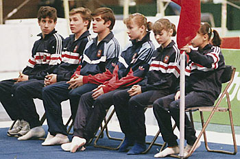

Sergei Rumbutis (USSR/LTU/SWE)

Rumbutis (3rd from left), with
teammates at the
1988 Chunichi Cup.
1986 Chunichi Cup V Champion
1987 Riga AA Bronze Medalist
Sergei was born on September 24, 1969. He's the coach of the Swedish junior national team, and his daughter, Adina, is also a gymnast.
Competition Results
1985
Jr. Friendship Tournament (Druzhba): 3rd AA, 4th R
1986
Chunichi Cup: 9th AA, 1st V, 1st PB, 2nd FX, 2nd R, 3rd HB
Jr. Friendship Tournament (Druzhba): 9th AA
Tokyo Cup: 1st PH
1987
Riga International: 3rd AA
USSR Championships: 14th AA
1988
Chunichi Cup: 21st AA, 7th PB, 8th FX
USSR Cup: 14th AA
World Sports Fair: 2nd AA
1992
Baltic-Nordic Championships: 2nd AA
World Championships: 9th PB
World Stars: 10th AA
1993
Baltic Sea Games: 9th AA
Kosice International: 21st AA
This page was created on July 3,
2009.
© Gymn Forum